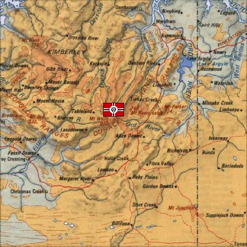

Kimberlite Kimberlite
South Africa, Abandoned Diamond Mine Underground Mountain Fortress Neuen Bitter Kimberlites exact position is unknown, but it is known to lie somewhere in the highlands of south central Africa. The actual fortress is entirely underground, spaceport and all holed out of an old abandoned diamond mine that was found in the early invasion of Africa. Although the Federation does not know Kimberlites exact location, they know full well that it exists, as it is used as Zeons primary staging grounds in South Africa, as well as part of the Odessa mining operation. The Kimberlite spaceport is not as heavily trafficked as the others, both because South Africa is somewhat at the edge of Zeon territory, and because the Duchy is trying to keep the location secret for as long as possible. Neuen Bitter Bitter is an old and hardy warrior, having served with the Duchy as a Zaku pilot during the Riah Revolution all the way to his position as fortress commander today. He is wildly patriotic, and refuses to give any ground to the Federation for any reason. Kimberlite is very much his fortress, the TAF soldiers under his command fanatically loyal. Kimberlite  |